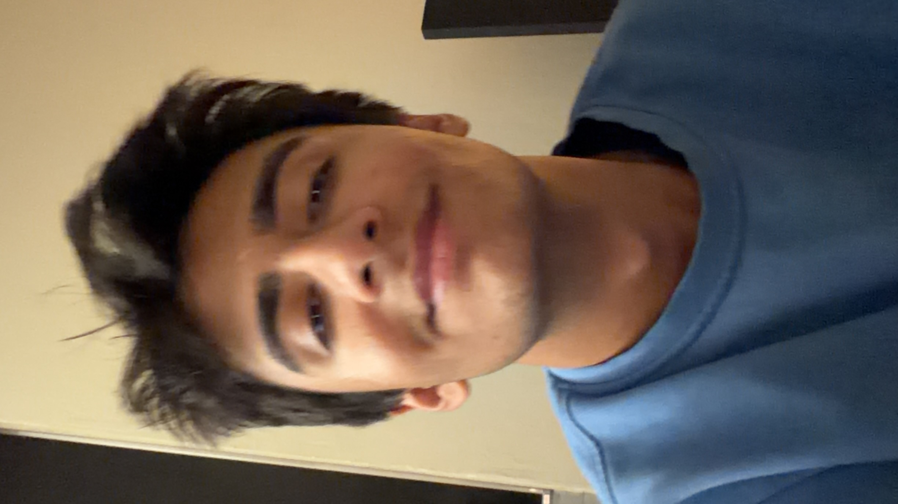
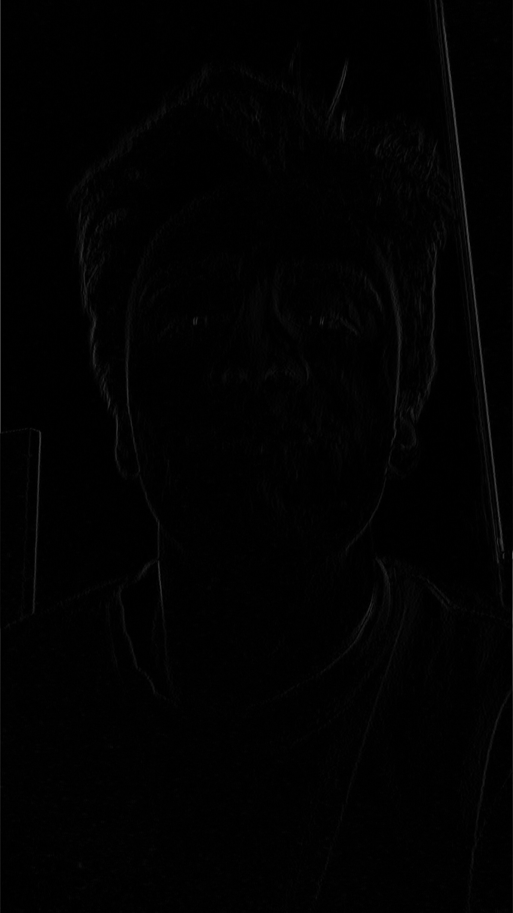
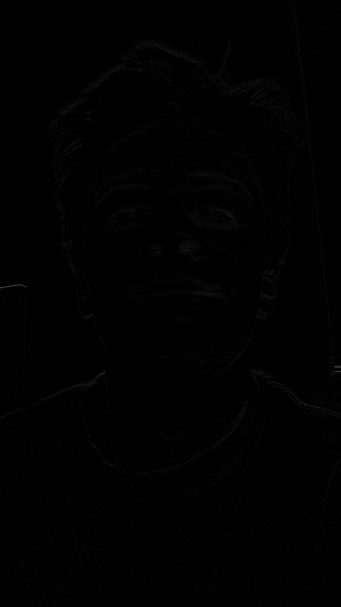

Part 1.1
Convolutions from Scratch!
A convolution takes a small kernel, flips it, and slides it across an image. At each position, the kernel and image values are multiplied and summed to produce one pixel in a new feature map.
Dx[1, 0, −1]
Dy[1, 0, −1]T
These finite difference filters approximate brightness changes: Dx across the horizontal direction and Dy across the vertical direction.
Implementation
Convolution with NumPy
def conv(image, kernel):
kernel = np.flip(kernel)
height, width = image.shape
kernel_height, kernel_width = kernel.shape
pad_height = kernel_height // 2
pad_width = kernel_width // 2
padded = np.pad(
image,
((pad_height, pad_height),
(pad_width, pad_width)),
mode="constant",
)
output = np.zeros((height, width))
for row in range(height):
for col in range(width):
total = 0
for kernel_row in range(kernel_height):
for kernel_col in range(kernel_width):
im_value = padded[
row + kernel_row,
col + kernel_col,
]
kernel_value = kernel[
kernel_row,
kernel_col,
]
total += im_value * kernel_value
output[row, col] = total
return outputdef conv_two_loops(image, kernel):
kernel = np.flip(kernel)
height, width = image.shape
kernel_height, kernel_width = kernel.shape
pad_height = kernel_height // 2
pad_width = kernel_width // 2
padded = np.pad(
image,
((pad_height, pad_height),
(pad_width, pad_width)),
mode="constant",
)
output = np.zeros((height, width))
for row in range(height):
for col in range(width):
patch = padded[
row : row + kernel_height,
col : col + kernel_width,
]
output[row, col] = np.sum(
patch * kernel
)
return outputInput and kernel flip
Both functions take an image as a NumPy array and a kernel to apply. The kernel is flipped first because mathematical convolution uses the reversed kernel rather than applying it in its original orientation.
Dimensions and padding
After reading the image and kernel dimensions, the padding
on each side is set to kernel_size // 2. For the
odd-sized kernels used here, this places the kernel center
over every image pixel and keeps the output the same height
and width as the input. Without padding, the border would
remove output positions; adding those pixels back means
that every input position produces one output pixel.
The four-loop scan
The outer row and column loops scan across the image. At each location, the inner two loops scan across the kernel, multiply each padded image value by its corresponding kernel value, and add the product to a running total. That total is then written to the matching position in the output image.
The two-loop version
The outer image scan stays the same, but the inner kernel
loops are replaced by one NumPy slice. This extracts the
complete image patch beneath the kernel, and
np.sum(patch * kernel) performs all of the
multiplications and accumulation at once.
Results
Applying the finite difference filters


[1, 0, −1] measures left-to-right brightness
changes, emphasizing vertical edges such as the sides of my
face, hair, and the background frame.

[1, 0, −1]T measures top-to-bottom
brightness changes, emphasizing horizontal edges such as my
eyebrows, eyes, lips, and chin.
9 × 9 Extreme Sharpening Kernel
Amplify the center, subtract the neighborhood
The center pixel receives a weight of 81, while
all 80 surrounding positions receive −1. The
weights still sum to one, so constant regions are preserved,
but any difference between the center and its neighborhood is
amplified dramatically.
This is a high-boost sharpening filter, not a blur. It strongly emphasizes edges and local contrast by subtracting the broad neighborhood from an amplified center pixel.

convertScaleAbs converts the strong positive and
negative responses into a visible high-contrast image.


.jpg)
.jpg)